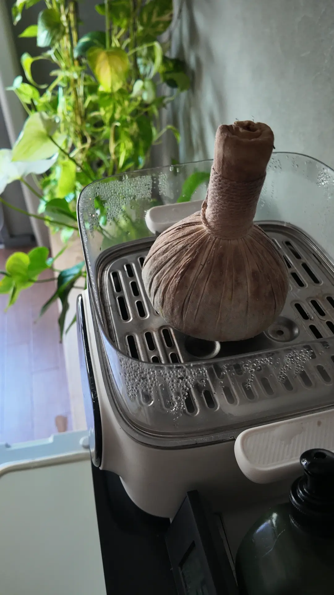
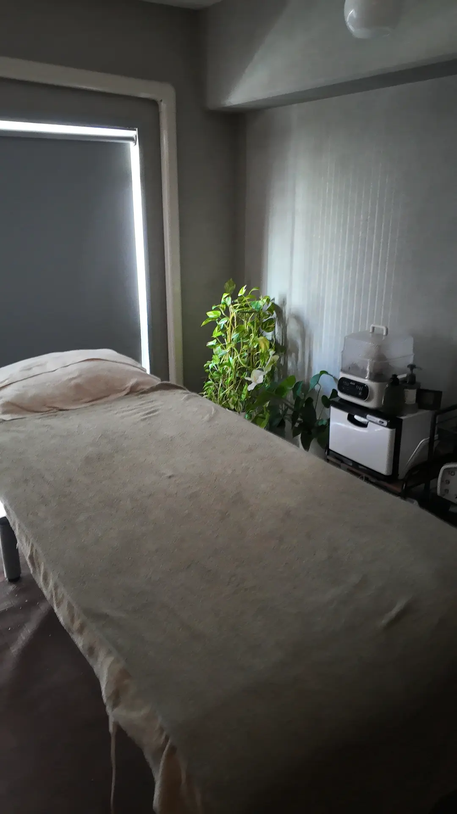
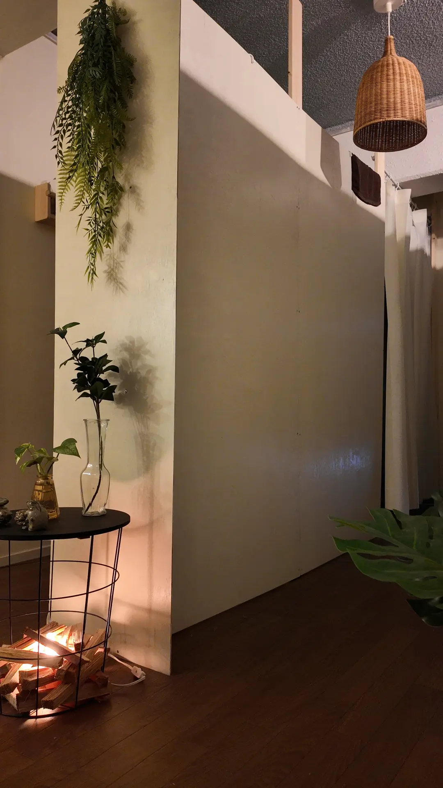
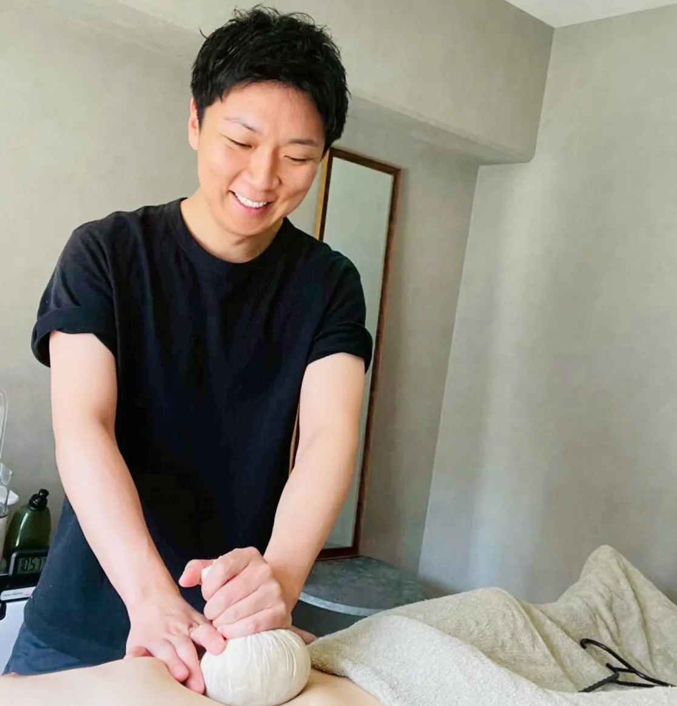

本場のチネイザンAuthentic Chi Nei Tsang
タイ古式のお腹のトリートメント。当店で一番選ばれているメニューです。「いつの間にか眠っていた」という声をよくいただきます。 A traditional Thai abdominal treatment, and the reason most guests come here. Many of them fall asleep partway through.
博多駅から徒歩5分 5 minutes from Hakata Station
ほっと一息つける、男性専門の完全個室サロン。
本場タイ古式のチネイザンでお迎えします。
A men-only private salon where you can finally exhale.
Authentic Thai Chi Nei Tsang, by hand.
SOCUについてAbout

タイ古式のお腹のトリートメント。当店で一番選ばれているメニューです。「いつの間にか眠っていた」という声をよくいただきます。 A traditional Thai abdominal treatment, and the reason most guests come here. Many of them fall asleep partway through.

マンションの一室、扉を閉めれば駅前の喧騒は届きません。初めての方でも肩の力を抜いていただけます。 One door closes and the noise of the station district is gone. Easy to relax, even on a first visit.

ご予約から施術まで、男性セラピストのキシが最後まで担当します。途中で人が入れ替わることはありません。 Kishi, a male therapist, handles everything himself. Nobody else comes into the room.
脱毛Hair removal
痛みの少ない機器を使っています。「3回でほとんど生えてこなくなった」という声もいただいています。 We use a low-pain machine. One guest reported almost no regrowth after three sessions.
初めての方は、全身脱毛が ¥6,500(半額)。まずは一度お試しください。 First visit: full-body hair removal for ¥6,500 — half price. A good way to try it once.
脱毛をご希望の方は、あらかじめ施術部位の毛を剃ってからお越しください。剃り残しが多い場合、追加料金をいただくか、施術をお断りすることがあります。 Please shave the treatment area before you arrive. If a large amount of hair is left unshaved, we may add a fee or be unable to perform the treatment.
はじめての方へYour visit
まず足を温めます。歩き疲れた足がゆるむところから始まります。We start by warming your feet — especially welcome after a day of walking.
気になるところ、強さの好みを伺います。話したくない日は、静かに受けていただいて大丈夫です。We ask where it hurts and how firm you like the pressure. If you would rather not talk, that is completely fine.
選んでいただいたコースを、最後までキシが担当します。途中で眠ってしまっても構いません。Kishi performs the whole course himself. Falling asleep is normal, and welcome.
施術後は無料のドリンクとお菓子をご用意しています。お帰りまでごゆっくりおくつろぎください。A complimentary drink and a sweet afterwards. Please stay as long as you like before heading back out.
お客様の声Reviews
旅行で福岡に行った際に観光の合間で利用させていただきました。90分のオイルマッサージをお願いしましたが料金は相場より安いですし、施術は力もしっかりありつつ加減も気にしてくれるので全身隅々までほぐれました。歩き疲れた身体が軽くなりました。I stopped in between sightseeing on a trip to Fukuoka. I had the 90-minute oil massage — cheaper than the going rate, firm but always checking the pressure. My legs felt light again after a long day of walking.
腸もみ初めてでしたが、すごく良かったです。博多駅からも近くで、施術も上手くて全身が楽になりました。男性施術者の方で男性専用で出来る店舗少ないので助かります。My first time trying abdominal massage, and it was excellent. Close to Hakata Station, skilled hands, and my whole body felt easier afterwards. Men-only places with a male therapist are rare, so this helps.
店内は色が統一されてとても落ち着いた雰囲気です。施術は凄く丁寧にやってくれます。脱毛はすぐ効果を実感しました。3回ほど受けましたがほぼ生えてきていません。仕事で疲れたときは毎回お願いしています。The room is calm and consistently styled. The work is careful, and the hair removal showed results quickly — after about three sessions there is almost no regrowth. I come back whenever work wears me down.

セラピストYour therapist
はじめまして、セラピストのキシです。皆様が「ほっと一息」つけるようなサロンを目指して日々工夫をしております。休日は登山やアウトドア、のんびりとした空間で過ごすことが好きです。 Hello — I’m Kishi. I work at this every day, trying to make a salon where people can take one deep breath and let go. On days off I’m usually hiking, outdoors, or somewhere unhurried.
緑に囲まれた落ち着いたサロンで日々の疲れを癒します。博多に来られた際は是非一度ご来店くださいね。 The salon is quiet and full of plants. If you find yourself in Hakata, I’d be glad to see you.
アクセスAccess
現金のほか、以下の決済に対応しています。海外のカードもご利用いただけます。 Cash, plus everything below. Overseas cards are accepted.
ご予約Reservations
ご希望のメニューと日時をメッセージでお送りください。空き状況をご案内します。 Send us the treatment you’d like and a preferred time, and we’ll reply with what’s open.
当日の空き状況は、Instagramのストーリーで毎日お知らせしています。 Same-day availability is posted daily on our Instagram stories.
お電話でのご予約は承っておりません。施術中は電話に出られないため、LINEまたはInstagramからお願いいたします。 We do not take reservations by phone — we can’t answer during treatments. Please use LINE or Instagram.
FAQ
簡単な英語で対応しています。翻訳アプリも使いますので、遠慮なくお越しください。Basic English, yes — and we use a translation app when needed. Please don’t hesitate.
はい。各種クレジットカードのほか、電子マネーやQRコード決済にも対応しています(Airペイ)。現金もお使いいただけます。対応ブランドは「アクセス」の欄に一覧を載せています。Yes. Credit cards, e-money and QR code payments are all accepted (via AirPAY), as well as cash. The full list of brands is shown in the Access section.
お部屋に置いていただけます。観光の合間に立ち寄られる方も多いので、遠慮なくお持ちください。You can keep it in the room. Plenty of guests drop in mid-sightseeing, so bring it along.
セラピストが一人のため、ご予約をお願いしています。当日でも空いていればご案内できますので、まずはご連絡ください。With one therapist we ask that you book. Same-day is often possible if there’s a gap — just message us.
申し訳ありません。当店のメニューはすべて男性限定とさせていただいております。We’re sorry — all treatments here are for male clients only.
日本にチップの習慣はありません。表示料金のみで大丈夫です。Tipping isn’t customary in Japan. The listed price is all you pay.
普段着でお越しください。施術用のお着替えをご用意しています。Come as you are. We provide clothing to change into for the treatment.
お電話でのご予約は承っておりません。施術中は電話に出られないため、LINEまたはInstagramのDMからお願いいたします。We don’t take phone reservations — we can’t pick up during treatments. Please use LINE or Instagram DM.